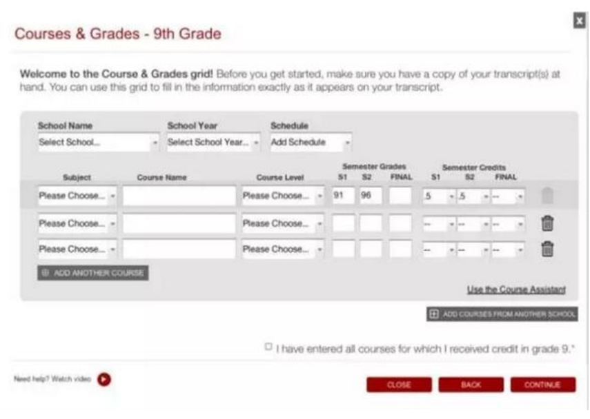

进入6月，离2017-2018美本申请季正式开启就不远了。这两年，美国本科申请变化很多，有来自SAT的变化，有来自CA申请系统的变化，也有文书题目的变化。今天盘点了一下2018年美国本科申请的6大变化，供眼下高二、11年级的学生参考，提前做好相关准备。
1.CB官网调整2017-2018年SAT出分政策
为了让SAT考试能够尽快出分，2017-2018年的出分政策有了新的变化，2017年下半年起SAT出分时间缩短至2周。往常SAT的出分惯列是阅读、数学、写作同步出分，而调整后的出分政策变为：阅读和数学成绩将早于写作公布，写作部分成绩将在其它成绩发放后的5天公布。因此，选择不考SAT写作部分的同学可以早些收到分数，并且将分数送至大学。
2017-2018学年出分新政策如下：
1)2017年10月、11月、12月，2018年3月、5月的SAT考试，阅读(Evidence-Based Reading and Writing)和数学(Math)部分将于考试日之后的两周左右出成绩，并且，CB将在你收到这个分数的10天内将成绩递送给大学。
2)如如果你也参加了SAT写作部分，写作成绩将于你收到阅读+数学之后的5天内公布。写作成绩一出来，CB就会将所有成绩递送给大学。
部分家长和学生担忧10月份的成绩(包含作文)是否能够赶上早申，调整后由出分图表可以看到，10月国际考场的考生出分日期将在10月20—10月26日，作文部分的成绩将在10月31日公布，基本上可以赶上多数学校的ED1申请。
2.Common App对课程和成绩要求更详细
在以前的版本汇总，CA申请系统只需要学生列出当前的课程，而报告GPA成绩是可以选择的，在学校特定的补充页面中允许学院免费索取额外的信息(比如前几年的课程表和特定的成绩)。
现在Common App新增Courses & Grades功能，将要求学生列出高中期间的所有课程，此外，成绩也要显示出来。虽然学校最终也会收到官方上传的成绩报告，但手动输入成绩会帮助学生对自己的成绩变化有一个概览。
3.学生可邀请校外升学顾问辅导
之前学生可以邀请高中在校升学顾问参与申请过程，改变后的Common App申请，学生还可以邀请校外资源，比如校外的申请顾问、独立咨询顾问及社区组织(community-based organizations)辅导自己的申请。
4.Common App和Google云盘整合，方便上传申请材料
近年来，Google和很多公立和私立学校达成了合作协议，为师生提供一种便利的方式来完成作业。许多学生会使用Google Drive等在线工具撰写论文、做演示，或者和老师进行在线对话。
今年改革后，CA申请系统将为学生提供一种直接从Google云端硬盘将申请资料上传的方式。学生可直接调用存在谷歌云盘上的申请材料，上传文件、简历、作业以及申请的补充资料等。(这个功能对大部分国内的申请生来讲，是需要翻墙使用的)
5.Common App账号信息可长期保留
以往CA系统每年8月1日重新开放的时候，已经注册过的学生信息会全部清除，需要重新注册。而今年与往年不同的是，在8月1日之前申请2017年入学的学生可以一直保留自己的CA帐号，申请期间的个人添加信息一直会保存，除非自己删除。 这样一来，不了解申请流程的同学，可以有足够的时间去了解，并按照要求准备材料和活动。
6.Common App新增两道文书题目
2017-2018年度申请文书题目增加了2道新题，现在一共是7道选题。新增题目如下：
【题目6】Describe a topic, idea, or concept you find so engaging that it makes you lose all track of time. Why does it captivate you? What or who do you turn to when you want to learn more? (新增)
描述一个让沉迷其中，甚至忘记时间的话题、想法、理念。它哪里吸引你? 当你试图去了解更多的时候，你会求助于什么样的帮助?
解读：这道题招生官希望看到applicants的学习动力以及学习能力，考察他们如何利用身边的资源来学习。这道题目适合有着强烈专业兴趣的学生选择。这可能跟“Why Major”系列撞车，目测写的人不会特别多。
【题目7】Share an essay on any topic of your choice. It can be one you've already written, one that responds to a different prompt, or one of your own design. (新增)
任选话题写一篇短文。它可以一篇是你过去所写的文章，文章题目不限，可以自创。
解读：这道题目看似简单，但是这7个里面最难的。因为如果你发现自己写的东西和其它6道题目都有沾点边儿，但是你选了7，会有种possibility让人觉得你写的东西很散。还不如选择一个题目去写。但是如果有着丰富的想象力，写小说，写诗的同学可以大胆地选择这个题目。但是还是要和自己的counselor沟通，毕竟自己觉得有趣的小说和诗，只是主观的想法，一定要和counselor或者peer沟通。